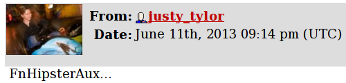
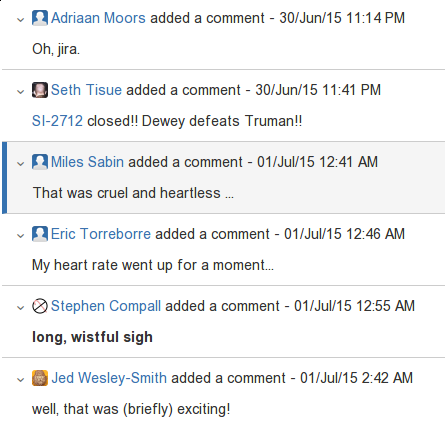

@fommilnetlib-java (underpinning Spark ML)No shapeless experience required
spray-json
scala-compiler workarounds
spray-json-shapeless step by step// note "sealed"
sealed abstract class JsValue
// note case classes or case objects
// note recursive types
case class JsObject(fields: Map[String, JsValue]) extends JsValue
case class JsArray(elements: Vector[JsValue]) extends JsValue
case class JsString(value: String) extends JsValue
case class JsNumber(value: BigDecimal) extends JsValue
sealed trait JsBoolean extends JsValue
case object JsTrue extends JsBoolean
case object JsFalse extends JsBoolean
case object JsNull extends JsValue@implicitNotFound(msg = "Cannot find JsonFormat type class for ${T}")
trait JsonFormat[T] {
def read(json: JsValue): T
def write(obj: T): JsValue
}
implicit class EnrichedAny[T](any: T) {
def toJson(implicit f: JsonFormat[T]): JsValue = f.write(any)
}
implicit class EnrichedJsValue(v: JsValue) {
def convertTo[T](implicit f: JsonFormat[T]): T = f.read(v)
}“Empty your mind, be formless.
Shapeless, like water.
If you put water into a cup, it becomes the cup.
If you put water into a bottle, it becomes the bottle.
If you put water into a teapot, it becomes the teapot.
Water can flow and it can crash.
Become like water my friend."
– Bruce Lee
scala-compilerscalac 3.0
import shapeless._, labelled._, syntax.singleton._
trait JsonFormat[T] {
def read(json: JsValue): T
def write(obj: T): JsValue
}implicit object StringJsonFormat extends JsonFormat[String] {
def read(value: JsValue) = value match {
case JsString(x) => x
case other => throw new DeserializationError(other) // sic
} // Either[String, T]
def write(x: String) = JsString(x)
}implicit class EnrichedAny[T](val any: T) extends AnyVal {
def toJson(implicit f: JsonFormat[T]): JsValue = f.write(any)
}
implicit class EnrichedJsValue(val v: JsValue) extends AnyVal {
def convertTo[T](implicit f: JsonFormat[T]): T = f.read(v)
}"bar".narrow : String("bar") // <: String
42.narrow : Int(42) // <: Int
'foo.narrow : Symbol('foo) // <: Symbol
true.narrow : Boolean(true) // <: BooleanNil.narrow : Nil.type'a ->> "bar" : String with KeyTag[Symbol('a), String]
'b ->> 42 : Int with KeyTag[Symbol('b), Int]
'c ->> true : Boolean with KeyTag[Symbol('c), Boolean]val foo = implicitly[Witness[String("foo")]].value : String("foo")
val answer = implicitly[Witness[Int(42]]].value : Int(42)field[Symbol('a)]("bar") : FieldType[Symbol('a), String] // <: String
field[Symbol('b)](42) : FieldType[Symbol('b), Int] // <: Int
field[Symbol('c)](true) : FieldType[Symbol('c), Boolean] // <: Boolean"hello" :: 13 :: true :: HNil
: String :: Int :: Boolean :: HNil('a ->> "hello") :: ('b ->> 13) :: ('c ->> true) :: HNil
: FieldType[Symbol('a), String] ::
FieldType[Symbol('b), Int] ::
FieldType[Symbol('c), Boolean] ::
HNil
// <: String :: Int :: Boolean :: HNilcase class Teapot(a: String, b: Int, c: Boolean)implicit object HNilFormat extends JsonFormat[HNil] {
def read(j: JsValue) = HNil
def write(n: HNil) = JsObject()
}implicit def hListFormat[Key <: Symbol, Value, Remaining <: HList](
implicit
key: Witness[Key],
jfh: JsonFormat[Value],
jft: JsonFormat[Remaining]
): JsonFormat[FieldType[Key, Value] :: Remaining] = new JsonFormat { def write(hlist: FieldType[Key, Value] :: Remaining) =
jft.write(hlist.tail).asJsObject :+
(key.value.name -> jfh.write(hlist.head)) def read(json: JsValue) = {
val fields = json.asJsObject.fields
val head = jfh.read(fields(key.value.name))
val tail = jft.read(json)
field[Key](head) :: tail
}
}val f = implicitly[JsonFormat[
FieldType[Symbol('a), String] ::
FieldType[Symbol('b), Int] ::
FieldType[Symbol('c), Boolean] ::
HNil]]
val teapot = ('a ->> "hello") :: ('b ->> 13) :: ('c ->> true) :: HNil
val expected = "{'a': 'hello', 'b': 13, 'c': true}".parseJson
f.write(teapot) shouldBe expected
f.read(expected) shouldBe teapot => JsonFormat[String]
+ JsonFormat[FieldType[Symbol('b), Int] ::
FieldType[Symbol('c), Boolean] ::
HNil]
=> JsonFormat[Int]
+ JsonFormat[FieldType[Symbol('c), Boolean] ::
HNil]
=> JsonFormat[Boolean]
+ JsonFormat[HNil]
val hlist = ('a ->> "hello") :: ('b ->> 1) :: ('c ->> true) :: HNilcase class Teapot(a: String, b: Int, c: Boolean)
val teapot = Teapot("hello", 1, true)val generic = LabelledGeneric[Teapot]
generic.Repr : FieldType[Symbol('a), String] ::
FieldType[Symbol('b), Int] ::
FieldType[Symbol('c), Boolean] ::
HNil
generic.from(hlist) shouldBe teapot
generic.to(teapot) shouldBe hlistimplicit def familyFormat[T](
implicit
gen: LabelledGeneric[T],
sg: JsonFormat[T.Repr],
tpe: Typeable[T]
): JsonFormat[T] = new JsonFormat[T] {
if (log.isTraceEnabled)
log.trace(s"creating ${tpe.describe}")
def read(j: JsValue): T = gen.from(sg.read(j))
def write(t: T): JsValue = sg.write(gen.to(t))
}implicit val TeapotJsonFormat: JsonFormat[Teapot] = cachedImplicit
teapot.toJson // {"a": "hello", "b": 1, "c": true}sealed trait Receptacle
case class Glass(a: String) extends Receptacle
case class Bottle(a: Int) extends Receptacle
case class Teapot(a: Boolean) extends Receptacle
val generic = LabelledGeneric[Receptacle]
generic.Repr: FieldType[Symbol('Glass), Glass] :+:
FieldType[Symbol('Bottle), Bottle] :+:
FieldType[Symbol('Teapot), Teapot] :+:
CNilsealed trait Coproduct
sealed trait CNil extends Coproduct
sealed trait :+:[+H, +T <: Coproduct] extends Coproduct
final case class Inl[+H, +T <: Coproduct](head : H) extends :+:[H, T]
final case class Inr[+H, +T <: Coproduct](tail : T) extends :+:[H, T]def show(o: Coproduct): String = o match {
case Inl(head) => "\"" + head + "\""
case Inr(tail) => "(nil . " + show(tail) + ")"
}
show(generic.to(Glass("foo"))) // "Glass(foo)"
show(generic.to(Bottle(99))) // (nil . "Bottle(99)")
show(generic.to(Teapot(true))) // (nil . (nil . "Teapot(true)"))implicit object CNilFormat extends JsonFormat[CNil] {
def read(j: JsValue) = throw new GuruMeditationFailure
def write(n: CNil) = throw new GuruMeditationFailure
}implicit def coproductFormat[Name <: Symbol, Head, Tail <: Coproduct](
implicit
key: Witness[Name],
jfh: JsonFormat[Head],
jft: JsonFormat[Tail]
): JsonFormat[FieldType[Name, Head] :+: Tail] = new JsonFormat { def read(j: JsValue) =
if (j.asJsObject.fields("type") == JsString(key.value.name))
Inl(field[Name](jfh.read(j)))
else
Inr(jft.read(j)) def write(lr: FieldType[Name, Head] :+: Tail) = lr match {
case Inl(found) =>
jfh.write(found).asJsObject :+ ("type" -> JsString(key.value.name))
case Inr(tail) =>
jft.write(tail)
}
}Glass("foo").toJson // { "a":"foo" }
Bottle(99).toJson // { "a":99 }
Teapot(true).toJson // { "a":true }
(Glass("foo"):Receptacle).toJson // { "type":"Glass", "a":"foo" }
(Bottle(99) :Receptacle).toJson // { "type":"Bottle", "a":99 }
(Teapot(true):Receptacle).toJson // { "type":"Teapot", "a":true }"bar".narrow : String("bar") // CRASH!
42.narrow : Int(42) // BANG!
true.narrow : Boolean(true) // POWIE!scala> "bar".narrow
res0: String("bar") = bar
scala> 42.narrow
res1: Int(42) = 42
scala> true.narrow
res2: Boolean(true) = true
scala> 'foo.narrow
res3: Symbol with Tagged[String("foo")] = 'foo
field[Symbol('a)]("bar") // KERPLOP!
implicit val a = Witness('a)
scala> field[a.T]("bar")
res4: FieldType[a.T,String] = bar
trait A { type T }
def f(a: A, t: a.T) = ...
// parameter a must appear in a parameter list
// that precedes dependent parameter type a.Tdef f(a: A)(t: a.T) = ...def f(implicit a: A)(implicit t: a.T) = ... // THWAPP!
// TODO https://github.com/typelevel/scala/issues/8trait Hipster[T] { type Repr }
object Hipster {
type Aux[T, Repr0] = Hipster[T] { type Repr = Repr0 }
}
def f[T, Repr](implicit hip: Hipster.Aux[T, Repr]) = ...implicit def hListFormat[Key <: Symbol, Value, Remaining <: HList](
implicit
key: Witness.Aux[Key],
jfh: JsonFormat[Value],
jft: JsonFormat[Remaining]
): JsonFormat[FieldType[Key, Value] :: Remaining] = ...implicit def coproductFormat[Name <: Symbol, Head, Tail <: Coproduct](
implicit
key: Witness.Aux[Name],
jfh: JsonFormat[Head],
jft: JsonFormat[Tail]
): JsonFormat[FieldType[Name, Head] :+: Tail] = ...implicit def familyFormat[T, Repr](
implicit
gen: LabelledGeneric.Aux[T, Repr],
sg: JsonFormat[Repr],
tpe: Typeable[T]
): JsonFormat[T] = ...Hipster??
def validate[F[_], G, H, V <: HList, I <: HList, M <: HList, A <: HList, R]
(g: G)(v: V)(implicit
hlG: FnHListerAux[G, A => R],
zip: ZipApplyAux[V, I, M],
mapped: MappedAux[A, F, M],
unH: FnUnHListerAux[I => F[R], H],
folder: LeftFolderAux[M, F[A => R], applier.type, F[HNil => R]],
appl: Applicative[F]
) = unH((in: I) => folder(zip(v, in), hlG(g).point[F]).map(_(HNil)))
implicit def getTraversableformat[E, T <: GenTraversable[E]]( // WHAMMM!!!
implicit
cbf: CanBuildFrom[T, E, T],
ef: JsonFormat[E]
): JsonFormat[T] = ...T has kind ★GenTraversable[E] has kind ★→★scalac can’t equate ★ to a ★→★import scala.language.higherKinds
implicit def genTraversableFormat[T[_], E](
implicit
evidence: T[E] <:< GenTraversable[E], // both of kind *->*
cbf: CanBuildFrom[T[E], E, T[E]],
ef: JsonFormat[E]
): JsonFormat[T[E]] = ...
sealed trait Tree
case class Branch(left: Tree, right: Tree) extends Tree
case object Leaf extends Treetrait Smell[T]
implicit def leafSmell: Smell[Leaf] = ???
// recursive
implicit def treeSmell(implicit
branch: Smell[Branch],
leaf: Smell[Leaf]): Smell[Tree] = ...
implicit def branchSmell(implicit
tree: Smell[Tree]): Smell[Branch] = ...implicit def treeSmell(implicit
lazyBranch: Lazy[Smell[Branch]],
leaf: Smell[Leaf]): Smell[Tree] = {
val branch = lazyBranch.value
...
}
implicit def branchSmell(implicit
lazyTree: Lazy[Smell[Tree]]): Smell[Branch] = {
val tree = lazyTree.value
...
}implicit def hListFormat[Key <: Symbol, Value, Remaining <: HList](
implicit
key: Witness.Aux[Key],
lazyJfh: Lazy[JsonFormat[Value]],
lazyJft: Lazy[JsonFormat[Remaining]]
): JsonFormat[FieldType[Key, Value] :: Remaining] = new JsonFormat {
val jfh = lazyJfh.value
val jft = lazyJft.value
...
}implicit def coproductFormat[Name <: Symbol, Head, Tail <: Coproduct](
implicit
key: Witness.Aux[Name],
lazyJfh: Lazy[JsonFormat[Head]],
lazyJft: Lazy[JsonFormat[Tail]]
): JsonFormat[FieldType[Name, Head] :+: Tail] = new JsonFormat {
val jfh = lazyJfh.value
val jft = lazyJft.value
...
}implicit def familyFormat[T, Repr](
implicit
gen: LabelledGeneric.Aux[T, Repr],
lazySg: Lazy[JsonFormat[Repr]],
tpe: Typeable[T]
): JsonFormat[T] = new JsonFormat {
val sg = lazySg.value
}// a convenience for implicitly[Lazy[JsonFormat[T]]].value
// but also consider using shapeless' cachedImplicit
object JsonFormat {
def apply[T](implicit f: Lazy[JsonFormat[T]]): JsonFormat[T] = f.value
}Watch out for Strict by @alxarchambault (shapeless 3.0).
Always
package com.domain.api
package com.domain.formats
package com.domain.appNever
Use com.domain.formats from com.domain
How it’s supposed to work:
IMPLICIT RESOLUTION
How it actually works:
trait FamilyFormats extends LowPriorityFamilyFormats {
this: StandardFormats =>
}
object FamilyFormats extends DefaultJsonProtocol with FamilyFormats
private[sjs] trait LowPriorityFamilyFormats {
this: StandardFormats with FamilyFormats =>
...
}implicitly[JsonFormat[Symbol]] // => familyFormat
implicitly[JsonFormat[Left[String, Int]]] // => familyFormatpackage brucelee.api {
sealed trait Receptacle
case class Glass(a: String) extends Receptacle
case class Bottle(a: Int) extends Receptacle
case class Teapot(a: Boolean) extends Receptacle
}package brucelee.format {
object MyFormats extends FamilyFormats {
implicit override def eitherFormat[A, B](implicit
a: JsonFormat[A],
b: JsonFormat[B]) = super.eitherFormat[A, B]
implicit val symbolFormat = SymbolJsonFormat
implicit val ReceptacleF: JsonFormat[Receptacle] = cachedImplicit
}
}package brucelee.app {
import spray.json._
import brucelee.format.MyFormats.ReceptacleF
Glass("half").toJson
}sealed trait Dragon
case object Chinese extends Dragon
case object Japanese extends Dragon
case class Khmer(heads: Seq[Head]) extends Dragon
class Headimplicit val DragonF: JsonFormat[Dragon] = cachedImplicitWe want…
cannot find implicit for JsonFormat[Head]
We get…
cannot find implicit for JsonFormat[Dragon]
java.util.HashMap[String, AnyRef]
type StringyMap = java.util.HashMap[String, AnyRef]
type BigResult[T] = Either[String, T]trait BigDataFormat[T] {
def label: String
def toProperties(t: T): StringyMap
def fromProperties(m: StringyMap): BigResult[T]
}trait SPrimitive[V] {
// e.g. Int => java.lang.Integer
def toValue(v: V): AnyRef
def fromValue(v: AnyRef): V
}BigDataFormat for sealed traits.trait BigDataFormatId[T, P] {
def key: String
def value(t: T): P
}JsonFormatnull and Optionimport poly._
object choose extends (Set ~> Option) {
def apply[T](s : Set[T]) = s.headOption
}scala> choose(Set(1, 2, 3))
res0: Option[Int] = Some(1)
scala> choose(Set('a', 'b', 'c'))
res1: Option[Char] = Some(a)
object Canon extends Poly1 {
implicit def caseFile[F <: File] = at[F](_.getCanonicalFile)
}everywhere(Canon)(List(new File(".."))) // List(File("/home"))// the old way!
object WeekDay extends Enumeration {
type WeekDay = Value
val Mon, Tue, Wed, Thu, Fri, Sat, Sun = Value
}
def isWeekend(d: WeekDay) = d match {
case Sat | Sun => true
// Oops! Missing case ... still compiles
}// the new way!
sealed trait WeekDay
object WeekDay {
val Mon, Tue, Wed, Thu, Fri, Sat, Sun = new WeekDay {}
val values: Set[WeekDay] = Values
}
def isWeekend(d: WeekDay) = d match {
case Sat | Sun => true
case _ => false // compiler checks for this
}Values is in shapeless/examples/enum.scala
import shapeless.tag, tag.@@
trait First
val First = tag[First]
trait Last
val Last = tag[Last]def hello(first: String @@ First, last: String @@ Last) = {
println(s"hello $first $last")
println(s"${first.getClass} ${first.getClass}")
}hello("Bruce", "Lee") // ZZZZZWAP!val first = First("Bruce")
val last = Last("Lee")
hello(first, last)
// hello Bruce Lee
// class java.lang.String class java.lang.Stringhttps://github.com/milessabin/shapeless/tree/shapeless-2.2.5/examples/